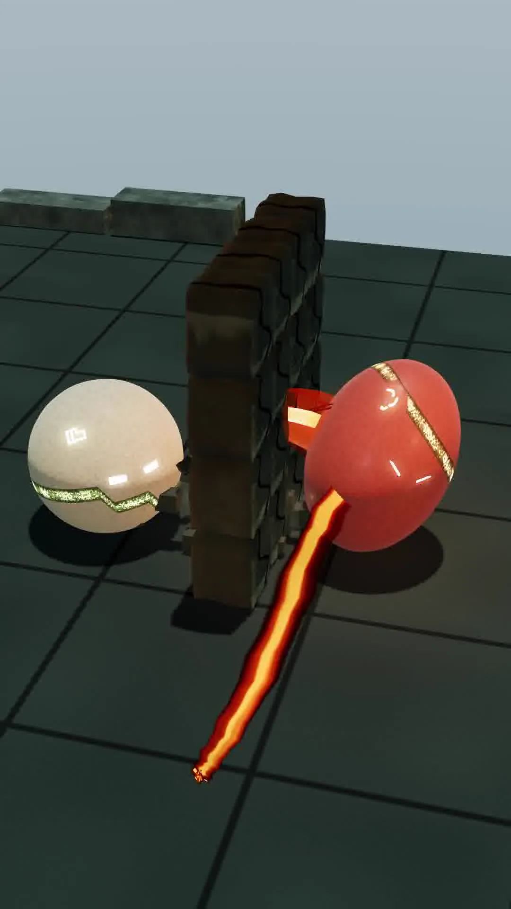
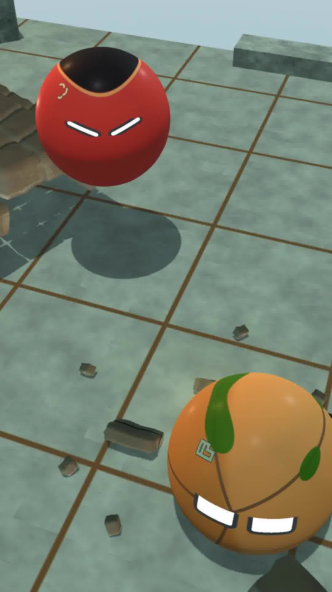
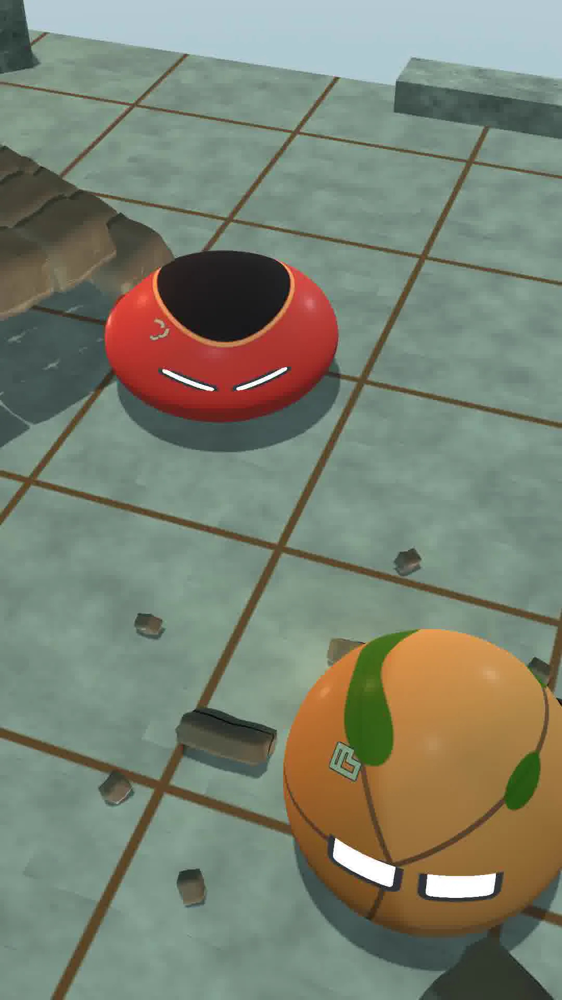

Letting the landing read
The reference fight now shows BLAZE's landing without foreground stone covering the contact. BLAZE remains round as it descends, then compresses after touching the floor. That makes the fall's weight easier to read.
This authored BLAZE-TERRA exchange uses the current reference-film orb appearances. These stills show both fighters during the aerial fire beat, the approach to the floor and the compression after contact.
The moving sequence still has abrupt camera changes and stretches of hanging in the air. The next pass steadies the camera and shortens those pauses so the landing connects naturally to the rest of the exchange.
From air to contact


